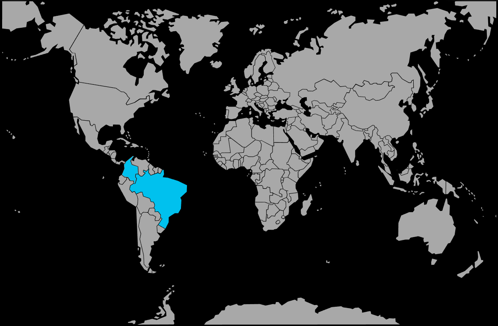

Systématique
- Ordre : Characiformes
- Famille : Characidae
- Genre : Hemigrammus
- Espèce : Hemigrammus bleheri
Hemigrammus bleheri, souvent appelé nez rouge ou tête‑rouge, est un petit characidé d’Amérique du Sud, célèbre pour sa tête rouge vif contrastant avec un corps argenté et une queue rayée de noir et de blanc.
Les adultes mesurent environ 4–5 cm et évoluent en bancs serrés dans la zone médiane ; la coloration de la tête pâlit nettement en cas de stress ou de mauvaise qualité d’eau, ce qui en fait un excellent indicateur de l’état du bac.
Espèce strictement grégaire, Hemigrammus bleheri doit être maintenu en groupe d’au moins 10 individus, idéalement plus, pour se sentir en sécurité et exprimer un comportement de banc cohérent.
Paisible mais très actif, il apprécie un aquarium spacieux, bien planté, avec de larges zones de nage libres et un éclairage plutôt tamisé, en compagnie d’autres poissons calmes de taille similaire.
Mode : pondeur libre ; les œufs sont dispersés en pleine eau ou parmi les plantes fines, sans soin parental, et sont rapidement consommés si les adultes ne sont pas retirés.
La reproduction demande un bac spécifique avec eau très douce, acide, peu éclairée, une végétation fine ou des mops de ponte, et une surveillance attentive afin de retirer les parents juste après la ponte.
Dimorphisme sexuel : peu marqué ; les femelles sont légèrement plus rondes et plus hautes de corps, surtout en période de ponte, alors que les mâles paraissent plus sveltes.
Espérance de vie : généralement 4 à 6 ans en aquarium, avec une eau stable, très propre et adaptée, ainsi qu’une maintenance en grand banc.
Dans son milieu naturel, Hemigrammus bleheri fréquente les eaux noires et acides des affluents de l’Amazone, peu profondes, calmes et fortement teintées par les tanins issus des feuilles et matières organiques en décomposition.
Répartition
Origine naturelle :
- Bassin du rio Negro (Brésil) et du rio Meta (Colombie), avec présence signalée dans certains affluents proches.
- Rivières lentes, bras morts, petites lagunes forestières et zones marginales calmes des grands cours d’eau amazoniens.
Les biotopes se caractérisent par une eau brunâtre, très acide et douce, une profondeur faible, un substrat couvert de feuilles et de bois, et une végétation aquatique et rivulaire abondante.
Paramètres de maintenance
Température : 23 à 27 °C.
pH : 5,5 à 7,0, avec une préférence pour une eau légèrement acide.
GH : 1 à 10 °dGH, eau très douce à douce.
Courant : faible à modéré, avec une filtration efficace mais un rejet adouci pour éviter les remous excessifs.
Volume conseillé : à partir de 120 L pour un banc d’au moins 10 individus, avec une grande longueur de façade pour la nage en groupe.
Régime alimentaire
Régime : omnivore à prédominance micro‑carnivore ; se nourrit de petits invertébrés, larves et micro‑organismes, et accepte en aquarium flocons fins, granulés, proies vivantes et congelées de petite taille.
Une alimentation variée incluant nauplies d’artémias, daphnies et aliments secs de qualité favorise des couleurs vives, un bon état général et une meilleure résistance aux variations de milieu.